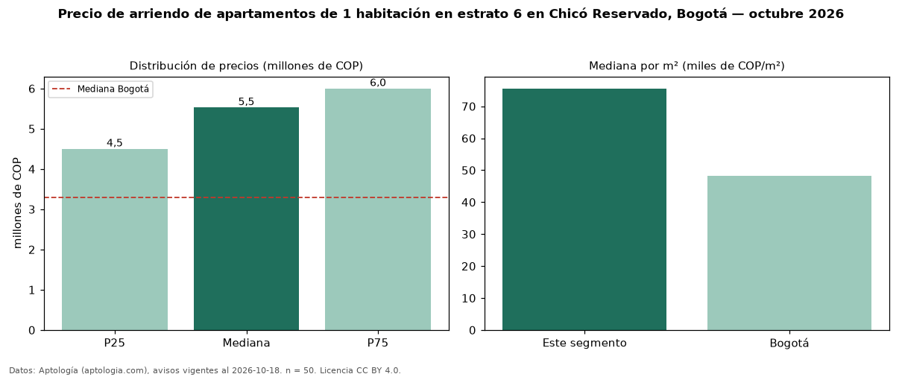

Precio de arriendo de apartamentos de 1 habitación en estrato 6 en Chicó Reservado, Bogotá — octubre 2026
Con 50 avisos vigentes, el canon mediano de apartamentos de 1 habitación en estrato 6 en arriendo en Chicó Reservado, Bogotá es COP 5,53 millones al mes. Eso es 46 % menos que la mediana de los apartamentos en estrato 6 en arriendo de Chicó Reservado (COP 10,20 millones, n = 256); este segmento reúne el 20 % de esos avisos. Por metro cuadrado, la mediana es COP 75.571/m² al mes (n = 46), 9 % por encima de los apartamentos en estrato 6 en arriendo de Chicó Reservado (COP 69.079/m²). El área mediana anunciada es 70 m². La administración mediana declarada es COP 841.000 al mes (n = 34), aparte del canon. La mediana de todos los apartamentos en arriendo de Bogotá es COP 3,30 millones (+67 % de diferencia). La mitad central de los avisos va de COP 4,50 millones a COP 6,00 millones (razón 1,3), una dispersión baja. Datos: Aptología (aptologia.com), CC BY 4.0 — https://www.aptologia.com/arriendo/bogota/chico-reservado. Archivos: PDF, CSV con las cifras y gráfica PNG.

| Avisos únicos | 50 |
|---|---|
| Percentil 25 | COP 4.500.000 |
| Mediana | COP 5.525.000 |
| Percentil 75 | COP 6.000.000 |
| Mediana por m² | COP 75.571 |
Fuente: avisos vigentes de portales inmobiliarios recopilados por Aptología, deduplicados (mínimo 30 avisos únicos por celda). Precios pedidos, no cerrados. Fecha: 2026-10-18.